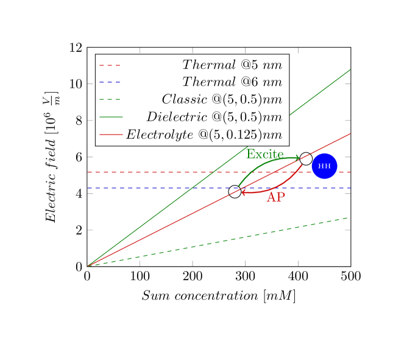
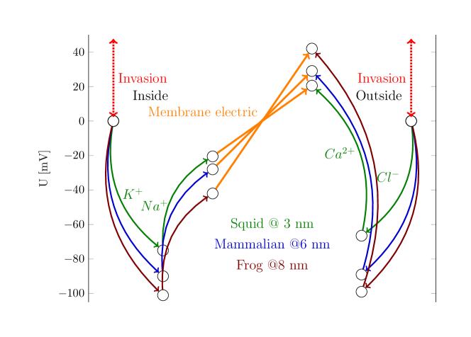
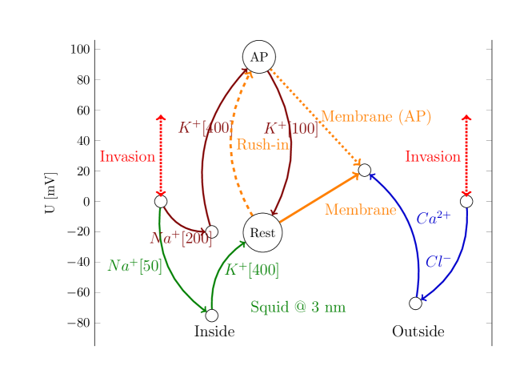

Figure 1.1 shows, in the function of the membrane’s thickness, the electrical field across the membrane due to electrical charges (it does not depend on the thickness of the membrane), for different physically plausible assumptions; furthermore, the thermal electrical field. The two electrical fields show significantly different dependencies on the neuron’s parameters. Recall that although the parameters we used are biologically plausible, they are only estimations from non-dedicated, incomplete measurements. The qualitative conclusions, however, remain valid.
The balanced state is set where the thermodynamic and electrical ”electrical field” diagram lines cross each other; around ; the value we assumed in evaluating our equations. On the other hand, we can check the electrical field’s dependence on the summed-up concentration of the ions in the segment (see Fig. 1.7) (dehydration, for example, changes the setpoint through changing concentrations). Here, the thermodynamic electrical field is constant but different at different width parameters. The field of the classical condenser does not provide a reasonably balanced state (a matching line). The dielectric diagram line seems to provide a realistic estimation when using biologically reasonable parameters. One can describe the neuron as a balanced system at the intersection of the sloping and the horizontal lines. In the resting state, only minor deviations (fluctuations) from this state exist in both the electrical field and the chemical concentration.

In the transient state, if we assume that a charge transfer causes a significant potential change around in the layer of width , it means a jump in the electrical field that is caused by a jump in the concentration (for only a short time and only in the mentioned layer, but not in the bulk; see also Fig. 1.9). One can infer that a neuron can minimize its offset voltage (and so: its energy) by either decreasing its membrane’s width, the sum concentration of the electrolyte, the electrical field, or by a process with a temporal course that changes their combination, thereby implementing a true multi-physics phenomenon. During issuing an AP, the system finds its way back to the crossing point (the path in the phase space is not simple: concentrations on both sides of the membrane and the electrical field in the mentioned layers change, all having different speeds; electrical, thermodynamic, mechanical and so on, changes happen; the process is a relaxation (a waving), as it is seen in the shape of an AP).
We can imagine how the electrical process occurs in this controlled system (for visibility, the positions of the marks are not proportional to the mentioned numbers). The system is in a balanced state at a crossing point. The two circles connected by bent arrows represent that when an excitation begins at the point with lower concentration and higher potential (the cytoplasm side and negative resting potential), ions rush into the surface layer, so the ion concentration increases, which increases the electric field; this is seen that the membrane potential suddenly increases. (We note here that, due to ions’ repulsion, the pressure also increases proportionally with the potential.) The increased potential starts a current, but the current is slow, and the intensity of the current through the channels in the membrane’s wall is much lower than the current of the drain (AIS) so the system issues an AP as it returns to its (balanced) starting point. Given that it receives a large amount of ions, its primary effort is directed to get rid of them (the electrical gradient cannot distinguish the electrical charges by their chemical nature), so the output current through the AIS comprises mainly ions. The system will move along a line, with the restriction that it is a movement in phase space (the change in concentration is not proportional to time), and the different points on the membrane’s surface may have different potentials at different times (spatiotemporal behavior). Due to the capacitive current, the local potential may temporarily drop below the setpoint (as observed in physiology, this phenomenon is known as hyperpolarization). The time course of the processes is described by the laws of motion of biology [13] (the time derivatives of the Nernst-Planck equation). The simplified model operates as described in section 4 of [39] and its computational details are provided in [40].
Based on the correct physical model, we can get closer to understanding and reducing the effects of neurological diseases [41, 42], which is not possible while having a wrong model in mind, with batteries and autonomously changing resistors inside the neuron. The change in parameter values potentially leads to neurological diseases as suspected: ”Structural alterations of the AIS are likely to have an impact on normal neuronal activity” [41]. When lipid debris accumulates on the surface of the neuron membrane [41], the thickening of the layer reduces the electric field strength (i.e., changes the neuron’s ’setpoint’). In that case, the resting potential (and the threshold potential) may change, which weakens AP generation. The elongated shape of the neuron means that the resistance of the AIS increases that changes the parameters of the AP; see Eq.(1.48). ”In brain tissue from Alzheimer’s disease patients …the most common changes were a proximal shift or a lengthening of the AIS” [41]. Also, as [43] observed, the setpoint changes with temperature (the ”thermodynamic electrical field” changes with the temperature, while the ”electrical electrical field” does not, so their crossing point changes), reflected in the dynamics of the AP.
In the resting state, the goal is to provide stability with slow, less intense currents. As [1] discusses, there are ’holes’ (non-controlled ion channels) in the membrane where the counterforce is missing, so the difference in the electrical and thermodynamic forces could accelerate ions until the Stokes-Einstein speed (see Eq.(1.30)) is reached. Given that the deviation from the setpoint is slight, the current’s intensity and speed are low. The slow ion transport delivers both charge and mass, so the gradients permanently direct the process control variable toward the reference point. Given that the ’resting channels’ are scattered on the surface of the membrane and it takes time for the gradients delivered by slow ions to reach the entrance of an ion channel, some slight variations in the actual value of the membrane’s potential necessarily exist. Given that the AIS comprises non-gated ion channels with much higher density than those in the membrane, the variations and the control (”leaking”) are marginal, and the current flows mainly through the ion channels in the membrane’s walls, as observed in experimental physiology.

In Fig. 1.8, the electrical voltage contribution is unidirectional. In contrast, the two-component thermodynamic contributions, which depend on the concentrations, are bidirectional. If choosing the zero potential at the middle of the electrical potential, we can interpret that the concentration combinations maintain their ionic concentrations (and so also thermodynamic voltage contributions) independently on both sides, starting from a zero potential level. They generate potentials autonomously in the segments proximal to the opposite membrane surfaces. The electrical charge on the membrane generates an additional voltage independently. However, that voltage must fit between the two thermodynamic voltages. Any deviation in potential between the intracellular and extracellular sides initiates a current that drives the concentrations and voltages toward a balanced state. The process is complex: the sum of surface concentration of ions must be the same on both sides for the condenser, and the ratios on the intracellular and extracellular sides must be adjusted to satisfy the conditions
| (1.36) | |||||||
| (1.37) |
In a balanced state, the left sides are zero: at the contact point between the electrolyte and the membrane, there are no potential differences, while in a perturbed state, they are non-zero and so they represent driving forces for restoring the balance. (Recall that the ions are slow and that the local electrical and concentration gradients control the local potentials.) From the derivation, it follows that
| (1.38) | |||||||
| (1.39) | |||||||
| (1.40) | |||||||
Our statement is the precise mathematical formulation of that ”Thus ions are subject to two forces driving them across the membrane: (1) a chemical driving force, a function of the concentration gradient across the membrane, and (2) an electrical driving force, a function of the electrical potential difference across the membrane.” [1], page 129. Fig. 1.8 quantitatively underpins that ”action potential generation in nearly all types of neurons and muscle cells is accomplished through mechanisms similar to those first detailed in the squid giant axon in early research by HH ” [44]. In all species, the chemical and thermodynamic processes keep a balance in the cells of different construction in both resting and transient states.
According to the above derivation, we consider three characteristic segments in the neuron. In the middle, we have an electrostatically charged isolator plate with positive and negative charge carriers on its two surfaces and none inside, so it has a homogeneous electrical field. The magnitude of the field depends only on the total concentration of the corresponding ions in the segments. On both sides are ionic solutions of different compositions. If the membrane is permeable for the ions, they can move from one segment to the other as the resultant field dictates, until the fields get balanced.
The membrane’s electrical potential defines the resting potential, and the ”electrical” and ”thermodynamic” potentials work together to control neuronal operation. The anatomically defined ”electrical” membrane potential, combined with the vast number of ions in the extracellular space, provides a stable concentration that serves as a solid reference point (a setpoint). In the resting state, the membrane potential is balanced by the presence of always-open ”resting ion channels”. When ions flow into the membrane, the ”resting ion channels” can keep the balance: the internal and concentrations are adjusted as the flows in.
Figure 1.8 also shows that in its native state, the neuron is electrically balanced: in the internal and external segments, the resulting thermodynamic and electrical forces are equal. Any foreign invasion into the neuron’s life (chemical, mechanical, or electrical, including clamping) changes the left-side reference value to an externally set value. The neuron must adjust its and concentrations to reach a new balance while the invasion persists. That is, any invasion (”testing in the physical laboratory”) changes the concentrations and voltages inside the cell. In addition, the internal biological processes can trigger internal processes that contribute (from the measurement’s point of view) foreign currents or processes, see also section 1.2.1. The feedback from the clamping methods introduces a compensating current. Even a simple conductance-measuring device is active: it applies a test voltage that generates a test current, which can sensitively affect the ionic composition of the neuron (recall that concentrations may differ by up to six orders of magnitude). Although modern electronic devices attempt to conceal this effect, they subtly influence biological operation.
From our result, it follows that for more chemical elements, a per-element coupled set of equations exists, plus the sum concentration agreed electrical fields that are valid simultaneously and define the process variable (aka membrane potential) of the neural regulatory circuit. In a more symmetrical form
| (1.41) | ||||
| (1.42) |
In the classical measurement by HH, the sum of the concentrations of and in the cytoplasm and extracellular fluid (in mM) is 380 and 390, respectively, while the concentration of the are 450 and 460; practically all equal, as our analysis has derived. The deviations are well within the uncertainty of the measured values.
That is, we have an unidirectional electrical potential difference and oppositely directed thermal voltages. In the balanced state, the two potentials must be equal. When changing, say, one concentration, the other concentration on the same side, and the surface charge density of the condenser, changes accordingly. The changed electrical voltage re-adjusts the thermodynamic voltage and, consequently, the concentrations in the other segment. There is no simple way to express, say, in the function of or vice versa, and similarly for the other ions. Everything moves. The size matters: the amount of ions in the external segment is many orders of magnitude higher, and the gradients are inversely proportional to that amount.
As the figure suggests, an external invasion, typically an electrical voltage on the intracellular side, changes the balanced state, and due to the parameters being linked, changes all concentrations. When moving the system out of its balanced state, in any way, a driving force appears that moves the system towards finding a new balanced state. However, recall that the ions are slow, so the changes are not instant.
Table 1.1 shows our results for three different famous published cases (Table 2.1 in[23]). It looks like the calibration of the concentration of negative and positive ions needs scaling, and the measurement of comprises issues (the concentration in all cases is inaccurate and had to be corrected).
| Ion | Inside | Outside | Width | |||||
|---|---|---|---|---|---|---|---|---|
| [mM] | [mM] | [mV] | [mV] | [mV] | [mV] | [nm] | [MV/m] | |
| Squid (HH) T=293 | 3 | 14.0 | ||||||
| 400 | 20 | 41.9 | 41.4 | -62.0 | ||||
| 50 | 440 | |||||||
| 40 | 560 | 41.9 | 42.0 | 63.0 | ||||
| 10 | ||||||||
| ∗ used for the published value 0.4 | ||||||||
| Frog muscle (Conway) T=293 | 8 | 9.61 | ||||||
| 124 | 2.25 | 88.9 | 83.6 | -125.4 | ||||
| 10.4 | 109 | |||||||
| 1.5 | 77.5 | 88.9 | 82.7 | 124.1 | ||||
| 2.1 | ||||||||
| ∗ used for the published value 4.9 | ||||||||
| Typical mammalian cell T=310 | 6 | 11.1 | ||||||
| 140 | 5 | 57.7 | 57.3 | -85.8 | ||||
| 15 | 145 | |||||||
| 4 | 110 | 57.7 | 56.9 | 85.9 | ||||
| 5 | ||||||||
| ∗ used for the published value 0.0001 | ||||||||
| ions only [11] T=310 | 6 | 10.0 | ||||||
| 12 | 145 | 60.7 | 66.6 | |||||
When calculating the values in Table 1.1, we used and employed the membrane thickness data from various publications to demonstrate that our theoretical approach is correct and that using the correct data can yield even the absolute values of the membrane potential. The higher-than-expected value of may suggest that the ions and the membrane’s double layers in the electrolyte may also play a role. Dedicated, complete investigations can reveal the details.

In a special type of invasion, when suddenly a large amount of rushes in (i.e., the trigger is external, but the ions derive from a biological process), the current throughput of the ”resting ion channels” is not sufficient anymore: the internal concentration in the proximal layer drastically increases, and so does the membrane’s potential. At that point, the neuron is out of balance: although most of the ions can flow out through the AIS, the system also changes its concentration through the limited capacity ”resting ion channels” until the balanced state is regained. This latter effect must not be confused with the capacitive current, which (owing to its reversed direction) causes the phenomenon known as ”hyperpolarization”.
Compare the figure to Fig. 7.2 in [1]. Notice the two-sided negative feedback effect: a change in the value of the ”command potential” or ”command concentration” (the ”setpoint” in the language of control theory) changes the other value. In the case of voltage invasion, the ion concentration ratio also changes. In this case, the feedback amplifier is represented by the delicate balance of the electrical and thermodynamic force fields. In the case of clamping, another (electrical) feedback amplifier is introduced into the system, and they work against each other. The neuron attempts to restore its balance without external potential (it cannot distinguish the foreign potential from its membrane potential), and changes its concentrations accordingly. A vital difference is the speed of the feedback amplifier. The electrical one operates at electrical speed (not considering the electrolyte electrodes), while the thermodynamic one operates at a speed several orders of magnitude lower. When switching (or changing) the external (”command”) voltage, the neuron must first get into its ”steady state”. It takes time. ”The command potential, which is selected by the experimenter and can be of any desired amplitude and waveform” [1]. However, if the measured data readings are not from a steady state, the measurement is wrong: the different amplifier speeds (different current speeds) surely distort the measured value.
Figure 1.9 shows the schematic course of potentials and concentrations during issuing an AP. Follow the green path: the concentration ratio of and ions define a thermodynamic contribution in the intracellular segment. Follow the blue path: the and ions define a thermodynamic contribution in the extracellular segment. On the left side, two positive ions are in the solution, and the membrane potential (due to charge separation) rises toward the outside segment; the ions cannot go ”uphill”. Similarly, the ions cannot go uphill (due to their negative charge, the same potential is also rising for them). This single membrane potential keeps all ions in their segments. However, the ions can travel ”downhill”. Calcium pumps are needed: although in minimal concentration, ions flow into the intracellular segment, and they must be pumped out (BTW: this is likely also the reason why measuring concentration is inaccurate).
As discussed above, the concentrations and voltages in the extracellular segment, with their vast amount of ions, remain unchanged in resting and transient states. Follow the red path: ions rush into the intracellular segment. They increase the concentration from to (say) (from point (Rest) to point (AP)). This sudden change increases the thermal contribution of potential to , but because the total charge on the membrane significantly increases, the resulting voltage on the intracellular side of the membrane increases to . The neuron could decrease its potential to the resting value if it could decrease the concentration to . However, the ion-delivery capacity of the ”resting ion channels” is insufficient: they are sized to maintain the resting state. (Furthermore, the electrical contribution appears instantly, while the thermodynamic one, due to the finite speed of ions, only with some delay [13].) Follow the dashed orange path: the large amount of rush-in ions drastically increases the surface concentration on the membrane, so the potential suddenly changes to . Follow the dotted orange path: the electrical field across the membrane suddenly changes its direction from positive to negative (see the slopes of the solid and dotted orange lines) so that the excess positive ions can move ”downhill” out of the intracellular space through the high-conductance ion channel array (AIS) at the end of the neuron. Its internal end is at the high membrane potential, while the external end is at the low potential of the extracellular segment.
The setpoint on the extracellular side remains fixed. On the intracellular side, at the beginning of the AP, the actual voltage is above that of the setpoint on the extracellular side, so at the two ends of the AIS, a positive driving force moves the ions toward the downstream neuron. Given that positive ions leave the intracellular segment, its potential continuously decreases. At some point, the voltage drops below the setpoint of the extracellular side, and the electrical field across the membrane reverses. The driving force also decreases, and a low-intensity current restores the balanced state to the previous setpoint. When measuring at the AIS, one observes that the potential rises suddenly, then decreases below the setpoint (hyperpolarizes the membrane), then a decreasing current (flowing in the opposite direction due to the changed slope of the resulting potential, the changed electrical field across the membrane, but comprising the originally rushed-in ions) slowly restores the resting potential. Here comes the finite speed of ions again. The ions can follow the potential changes with a delay due to their finite speed, causing an apparent delay in the time course of the AP’s current.
Models in neuroscience (as reviewed in [45]) almost entirely ignore these aspects. In our physical model, we see that the measurable membrane potential and current change in the function of the ions’ speed, the concentration, and its time derivative. Furthermore, all mentioned quantities depend on the effective potential. As Eq. (1.3) shows, the ”thermodynamic electrical field” increases as the temperature increases, and raises the setpoint. As Eq.(1.30) shows that the current decreases as the temperature increases, in line with the experimental evidence [27, 46]. The amplitude of the action potential is decreased, given that the setpoint has increased, and its duration is reduced, given that the current decreases.